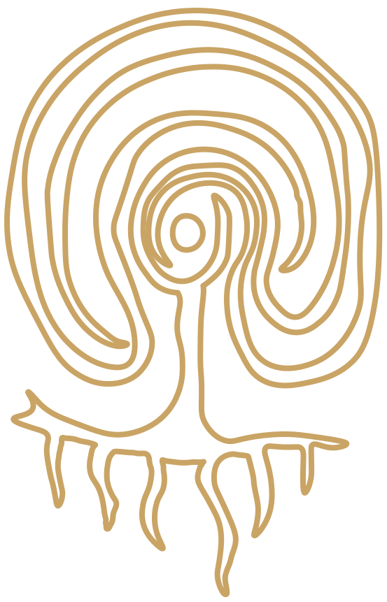

Meet a note.
Choose one of the workshop materials. Smell gently from a blotter. Notice it before trying to name it.
Find its story in the atlas ↗
ESSENTIARESONANCE Back to EssentiaAN ESSENTIA RESONANCE WORKSHOP COMPANION
If autumn had a scent, what would yours smell like?
Discover. Interpret. Create. Share only if you wish.
Use ← → to move between ideas. Space pauses motion. Chapters never advance automatically.
FROM UNDERSTANDING TO SELF-EXPRESSION
Smell the materials in front of you. Let a word, colour, texture or feeling lead you. A note has no single correct meaning.
Choose one of the workshop materials. Smell gently from a blotter. Notice it before trying to name it.
Find its story in the atlas ↗Does it feel crisp, soft, warm, distant—or something else? A memory is welcome; no memory is equally welcome.
Use your impressions to guide your scent with the workshop facilitator. Give your creation a name, a colour, or a few words.
Compare interpretations without ranking them. You can share a word, tell a story, or keep your experience private.
CONTINUE THE EXPLORATION
Meet the materials, places and traditions behind the scents in your workshop.